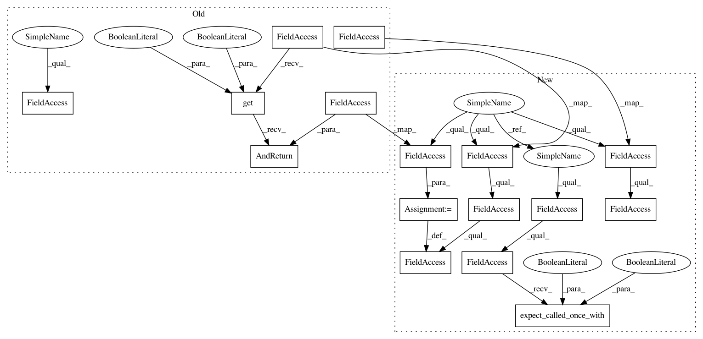

b5eb940cf734a1c379f46051a67bd76895f756b6,tests/python/pants_test/net/http/test_fetcher.py,FetcherTest,expect_get,#FetcherTest#Any#Any#Any#Any#,34
Before Change
self.listener = self.mox.CreateMock(Fetcher.Listener)
def expect_get(self, url, chunk_size_bytes, timeout_secs, listener=True):
self.requests.get(url, allow_redirects=True, stream=True,
timeout=timeout_secs).AndReturn(self.response)
self.response.status_code = 200
self.response.headers = {"content-length": "11"}
if listener:
self.listener.status(200, content_length=11)
chunks = ["0123456789", "a"]
self.response.iter_content(chunk_size=chunk_size_bytes).AndReturn(chunks)
return chunks
def assert_local_file_fetch(self, url_prefix=""):
After Change
self.fetcher.fetch(no_perms, self.listener)
@contextmanager
def expect_get(self, url, chunk_size_bytes, timeout_secs, listener=True):
chunks = ["0123456789", "a"]
self.requests.get.return_value = self.response
self.response.status_code = 200
self.response.headers = {"content-length": "11"}
self.response.iter_content.return_value = chunks
yield chunks, [self.ok_call(chunks)] if listener else []
self.requests.get.expect_called_once_with(url, allow_redirects=True, stream=True,
timeout=timeout_secs)
self.response.iter_content.expect_called_once_with(chunk_size=chunk_size_bytes)
def test_get(self):
with self.expect_get("http://bar",
In pattern: SUPERPATTERN
Frequency: 3
Non-data size: 16
Instances
Project Name: pantsbuild/pants
Commit Name: b5eb940cf734a1c379f46051a67bd76895f756b6
Time: 2016-08-09
Author: john.sirois@gmail.com
File Name: tests/python/pants_test/net/http/test_fetcher.py
Class Name: FetcherTest
Method Name: expect_get
Project Name: pantsbuild/pants
Commit Name: b5eb940cf734a1c379f46051a67bd76895f756b6
Time: 2016-08-09
Author: john.sirois@gmail.com
File Name: tests/python/pants_test/net/http/test_fetcher.py
Class Name: FetcherTest
Method Name: test_http_error
Project Name: pantsbuild/pants
Commit Name: b5eb940cf734a1c379f46051a67bd76895f756b6
Time: 2016-08-09
Author: john.sirois@gmail.com
File Name: tests/python/pants_test/net/http/test_fetcher.py
Class Name: FetcherTest
Method Name: test_iter_content_error
Project Name: pantsbuild/pants
Commit Name: b5eb940cf734a1c379f46051a67bd76895f756b6
Time: 2016-08-09
Author: john.sirois@gmail.com
File Name: tests/python/pants_test/net/http/test_fetcher.py
Class Name: FetcherTest
Method Name: expect_get